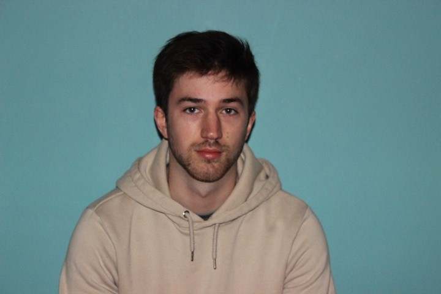
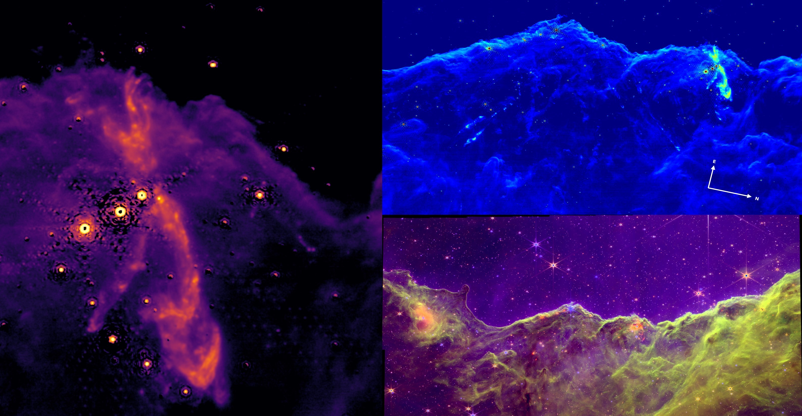
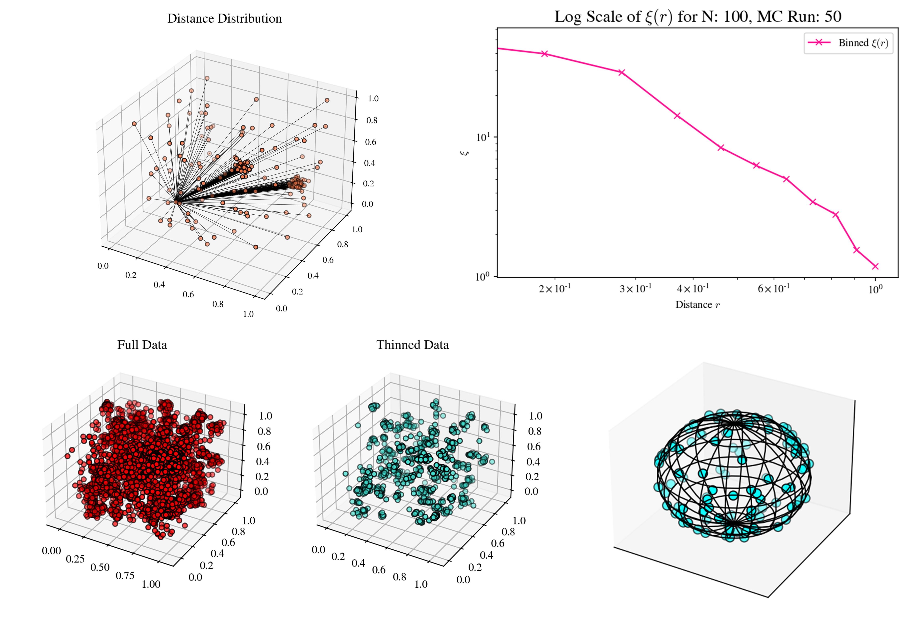

I am an aspiring astrophysicist currently completing my undergraduate degree (BSc in Physics with Astrophysics) at Maynooth University, Ireland. Currently looking for prospective PhD programs around Europe!
I am currently working on a project focusing on irradiated jets, particularly focusing on jet HH399 with ESO's MUSE instrument (paper in prep.). In the Summer of 2022, I had the opportunity on working with JWST data to find protostellar outflows in the Carina Nebula. See more below!
Hobbies of mine include surfing, (particularly on the west coast of Ireland), snowboarding and some video games as well.

My Research

(Top-left) Continuum subtracted image of the most prominent jet in NGC3324. (Top-right) Most active region located near the top of the cloud of NGC3324 showing a number of outflows with an rgb composite image below of the full region. (Bottom) Composite colour image released as part of JWST's first images.
Protostellar Outlflows
in the Carina Nebula
As part of a two-month Summer internship at the Dublin Institute of Advanced Studies (DIAS), I worked with Dr. Patrick Kavanagh on JWST data on the Carina nebula region of NGC3324. I was looking for protostellar outflows from young stellar objects (YSOs). The stunning JWST NIRCam and MIRI images revealed a myriad of stellar nurseries and stars, previously hidden by enshrouding dust. I presented my findings at the Irish National Astronomy Meeting (INAM) 2022, in the form of a poster (48.3 Mb).
A total of 21 protostellar outflows were discovered following analysis of the data. These "candidates" varied widely in their morphology and scale. A candidate driving source was identified in 17 of these, identified in one or more of the NIRCam and MIRI filters. Most of the outflows were found to reside near the top of the dust cloud of NGC3 3324, perhaps due to the advancing working surface of NGC3324.
These newly analysed objects were to be added to a MHO (molecular hydrogen object) catalogue. An independent study carried out by Megan Reiter et al. (arXiv link) presents similar results to my study, with further emphasis on the jets' kinematics and morphology. It was refreshing to see the similarities between the studies and the other possible analysis pathways I could have taken with more time. All the analysis was carried out utilising Python.
Monte Carlo Models
of Galaxy Clustering
In early Summer 2022, I took part in Maynooth University's SPUR program where I worked with Prof. Peter Coles on simulating models of galaxy clusters. The aim of the project was to compare the relationship between random and clustered distributions of galaxies in the 3D environments and the dimensionality of the cosmos by measuring the two-point correlation function for smaller datasets. See my poster on the project here (2.64 Mb).
Different variations of clustered systems were simulated by constructing custom probability density functions for sampling, generating a unique system of 'galaxies' each time the simulation was run. The pairwise-distance calculations were run in the form of a Markov chain Monte Carlo (MCMC) loop. After many iterations of the program or MCMC loops, the statistical noise in the correlation function dwindled, presenting a clear (noise-less) outcome.
My work was presented at the SPUR symposium, where I presented my poster to a judge and described the 6-week project to them. I was awarded the first prize in the faculty of science and engineering. More details below.

(Top-left) Pairwise-distance illustration for a single point. (top-right) Log scale of the correlation function estimator, expected to be linear for an inverse polynomical relatiosnhip in r. (Bottom-left) Visualisation of a full data set and a sampled dataset, the thinned data set would be sampled randomly at each iteration of the Monte Carlo loop. (Bottom right) protoype image of a single cluster of galaxies.
Background image credit: NASA
Achievements and Awards
Here are some achievements/awards I have obtained during my time at university. Some other activities are listed too.
SPUR: Faculty of Science and Engineering Winner
I was awarded the (joint) top prize for my SPUR project on 'Monte Carlo Models of Galaxy Clustering'.
I am currently teaching first year undergraduate studying physics in the laboratory. I show the students how to perform experiments and teach them how to write experimental reports.
In the past, I worked as a tutor for STEM related subjects for levels from high-school to early university.
Contact
Want to get in touch? You can contact me by pressing the buttons below or simply emailing pjjanas@gmail.com or pawel.janas.2020@mumail.ie.